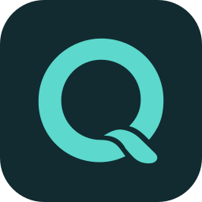
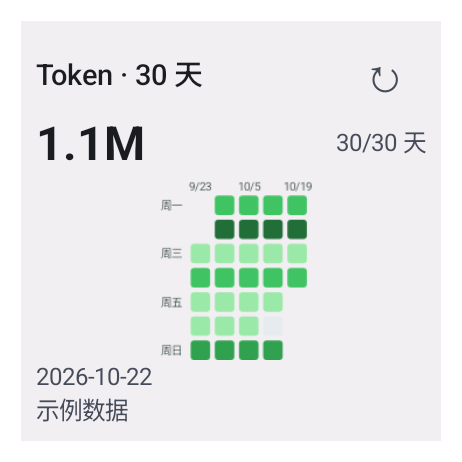
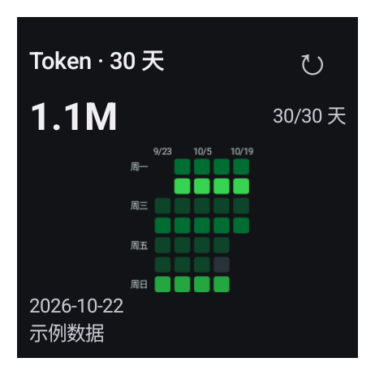

额度与重置时间
查看账号返回的额度周期、已用或剩余百分比，以及下一次重置时间。不同账号可用的额度窗口可能不同。

FOR ANDROID · OPEN SOURCE
把 Codex 的剩余额度与重置时间，
放在抬眼就能看见的地方。
Android 10 及以上 · 免费开源 · alpha30 预发布


alpha30 原生组件截图 · 浅色与深色 · 示例数据
SMALL APP. CLEAR PICTURE.
从当前额度到每天的 token 用量，
了解使用节奏，安排接下来的工作。
查看账号返回的额度周期、已用或剩余百分比，以及下一次重置时间。不同账号可用的额度窗口可能不同。
标准额度、2×1 紧凑额度和 2×2 的 30 天热力图组件，均支持缩放、主题配置和手动刷新。点击热力图，直接打开应用内的 30 日视图。
近 7 天、30 天都能切换条形图与 GitHub 风格热力图，并记住你的选择。切换保留时间范围与数据，不额外联网；缺失日期和真实零值分别标记。
发现新版本后，在 Quodex 内下载 APK、查看进度、取消或重试。校验通过后调起系统安装确认，无需跳转 GitHub 手动下载。
支持简体中文、English、日本語及跟随系统。页面、小组件、桌面额度图标和更新提示同步切换，浅色与深色界面采用玻璃风格悬浮导航。
额度、Token 统计、更新检查和 APK 下载支持有限次数的重试，并遵守服务端限流。刷新失败保留上次数据，下载中断后重新下载并校验。
CURRENT RELEASE · ALPHA30
玻璃风格悬浮导航，配合可切换的条形图与热力图。
选择保存在本机，下次打开继续使用。
均为 Android 模拟器截图，使用示例或合成数据。导航截图来自 alpha26；图表与 2×2 组件来自 alpha30。查看深色导航 · 图表与组件说明。已有桌面实例可能保留旧尺寸，缩小或重新添加即可使用 2×2 布局。
ARCHIVE · ALPHA22 NATIVE MOTION
页面淡入、额度填充、柱图依次展开。
这段 alpha22 历史实录保留动效设计的来源。
切换页面时淡入，连接按钮轻扫一道光，按下时微微收缩。
进度条平滑填入；数字直接显示实际值，随时可以读数。
切换近 7 天与 30 天，柱条错峰升起。同一范围更新时，高度自然过渡。
应用动效遵循 Android 系统动画设置，关闭动画后直接呈现结果。网页预览由你手动播放。
点击播放 · 约 12 秒 · 无声
ARCHIVE · ALPHA22
以下保留 alpha22 的浅色与深色截图，
当前界面请看上方 alpha30 功能展示。
以上为 alpha22 发布前的 Android 实际截图，均使用示例数据，作为历史资料保留。下载内容与版本说明以 GitHub Releases 为准。
BUILT FOR YOUR DAILY FLOW
显示最后更新时间，刷新失败时保留上次数据。已知多少，就展示多少。
READY WHEN YOU ARE
下载 APK → 安装并连接账号 → 添加桌面小组件。
首次通过 GitHub Releases 下载并安装，系统可能需要允许浏览器安装 APK。之后可在 Quodex 内检查、下载并安装更新；首次应用内安装需要授权 Quodex 安装应用，安装始终由你确认。尚未上架 Google Play。
Quodex 是独立的第三方开源工具，与 OpenAI 无隶属关系。Codex 名称用于说明所连接的服务。
可以手动刷新，也支持后台周期同步。实际运行时间受 Android 调度、网络与省电策略影响；token 统计可能存在服务端延迟。
小米、Redmi、POCO 的应用内添加入口会提醒检查“桌面快捷方式”权限，可打开应用信息，再进入权限管理查找该项；系统菜单名称可能不同。提醒不代表应用已检测到权限被拒绝。授权后选择“继续添加”，也可从系统桌面组件列表手动添加。查看权限指引。
桌面启动器可能保留旧实例的大小。长按组件缩小，或删除后重新添加，即可使用默认 2×2 布局。